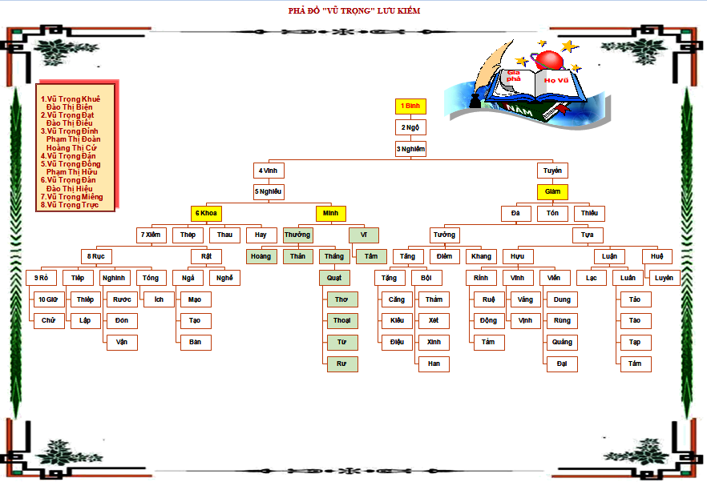
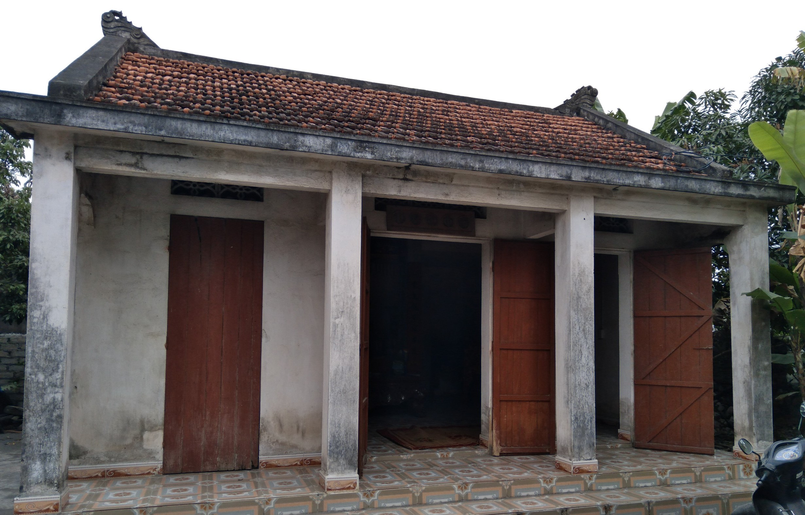

“Cây có cội, nước có nguồn. Chim có tổ, người có tông”. Những câu tục ngữ ấy đã phần nào nói nên được ý nghĩa về việc cần phải giữ gìn, phát huy truyền thống duy trì dòng tộc của người Việt Nam từ ngàn xưa. Việc chăm sóc, thờ phụng của đời sau đối với đời trước là việc làm mang ý nghĩa nhân văn cao cả, giữ trọn đạo hiếu.
Song, để duy trì và lưu giữ cho đời sau những giá trị truyền thống, công lao, tên tuổi của thế hệ trước thì mỗi gia đình, chi, dòng họ cần phải lập và lưu giữ được gia phả, tộc phả của chính gia đình mình, chi mình, dòng họ mình.
Qua nghiên cứu một số tài liệu ghi chép cho thấy: Thuỷ tổ dòng họ Vũ - Võ bắt đầu từ Cụ Tổ Vũ Hồn, ở làng Mộ trạch, xã Tân Hồng, huyện Bình Giang, tỉnh Hải Dương.
Tương truyền họ Vũ - Võ ở Việt Nam có nguồn gốc đầu tiên tại làng Mộ Trạch tỉnh Hải Dương, miền Bắc Việt Nam. Tuy nhiên, không có chứng cứ cho khẳng định rằng tất cả các gia tộc họ Vũ - Võ tại Việt Nam đều có cùng gốc từ đây. Theo gia phả, tộc phả và thần phả ở làng Mộ Trạch, tỉnh Hải Dương. Ông tổ họ Vũ - Võ là ông Vũ Hồn (804 - 853) là con trai một quan phủ nhà Đường (618 - 907) tên là Vũ Huy, người làng Mã Kỳ, huyện Long Khê, phủ Thường Châu, tỉnh Phúc Kiến (Trung Quốc) Sau khi từ quan ông Vũ Huy đã đi du ngoạn phương Nam và đã dừng chân tại đất Giao Châu (Việt Nam ngày nay), khi ấy là khu đất thuộc đồng bằng Bắc bộ bây giờ. Ông đã lấy một người thôn nữ tên là Nguyễn Thị Đức tại làng Mạn Nhuế thuộc huyện Thanh Lâm đất Hồng Châu (sau này là tỉnh Hải Dương). Ngày 8 tháng Giêng năm Giáp Thân (804) bà Đức sinh con trai, đặt tên là Vũ Hồn. Hiện có đền thờ tại Mộ Trạch, huyện Bình Giang, tỉnh Hải Dương, là một công thần.
Nhưng do chiến tranh, do mưu cầu cuộc sống, nên gia phả không được theo dõi thường xuyên, dẫn đến ngày nay có nhiều chi họ Vũ - Võ bị thất lạc, không xác định được nguồn gốc, kể cả đối với họ Vũ Trọng ở xã Lưu Kiếm, huyện Thủy Nguyên, Hải Phòng. Chính vì ý nghĩa đó, dòng họ Vũ nói chung và chi Vũ Trọng Lưu Kiếm nói riêng cần phải sưu tầm, nghiên cứu và biên tập gia phả để lưu danh lại cho con cháu đời sau.
Bộ phả ra đời là để ghi chép lại dòng họ Vũ Trọng khởi nguồn từ ông tổ Vũ Trọng Bình của dòng họ, người đầu tiên sinh cơ lập nghiệp tại Xóm Nam, xã Phúc Liệt, tổng Trúc Động, huyện Thủy Đường, phủ Kinh Môn, trấn Hải Dương (Trước năm 1813), Xóm Nam, xã Phúc Liệt, tổng Trúc Động, huyện Yên Hưng, tỉnh Quảng Yên (Trước năm 1945)[ Trang 30 Địa chí Thủy Nguyên, nhà xuất bản Hải Phòng năm 2015], nay là thôn Phúc Nam, xã Lưu Kiếm, huyện Thủy Nguyên, thành phố Hải Phòng. Thôn Phúc Nam phía đông giáp sông Móc (Bên kia sông là xóm Bến, xã Minh Tân), phía tây giáp quốc lộ 10 (đường máng nước thời Pháp đô hộ: Từ Vàng Danh – thị xã Uông Bí – tỉnh Quảng Ninh đến nội thành Hải Phòng) và thôn Trung, phía Nam giáp Chợ Tổng và thôn Mỹ Liệt, phía Bắc giáp thôn Bắc.

Dòng họ có một quá trình phát triển lâu dài, đến nay đã trải qua 14 đời, được chia làm 03 ngành. Song vì nhiều lý do khác nhau, dòng họ chưa có điều kiện và cơ hội lập dựng được tổ phả. Nay cuộc sống thanh bình, khá giả hơn trước, con cháu muốn lập gia phả, tộc phả để lưu lại cho thế hệ sau. Việc lập dựng tộc phả của dòng họ Vũ Trọng ở thôn Phúc Nam, xã Lưu Kiếm, huyện Thủy Nguyên, thành phố Hải Phòng gặp nhiều khó khăn. Dòng họ là một họ lớn lại chưa có phả gốc. Những cụ cao niên, nhân chứng lâu đời người còn, người mất. Bà con trong dòng họ sinh sống ở nhiều nơi. Mộ thủy tổ không có bia chí ghi chép gì. Mộ chí những đời sau cũng ở vào tình trạng hoàn toàn giống như vậy. Trong tình trạng như thế, con cháu, chắt, chít...hậu duệ ngày nay rất ít hiểu biết về quê tổ, các liệt tổ liệt tông của mình. Điều này làm khó cho việc xác định tìm kiếm. Mặc dù vậy, dòng họ hiện vẫn quần tụ nơi tổ quán “Phúc Nam, xã Lưu Kiếm” là phần lớn. Nơi đây còn nhiều chứng tích lâu đời của dòng họ, như nhà thờ tổ, số mộ chí các đời còn nhiều...
Nghe các cụ trong họ kể lại: Vào thế kỷ 18 (khoảng năm 1715) vùng đất dọc theo hai bờ sông Đá Bạc, sông Giá, sông Bạch Đằng xuôi ra biển làng xã còn thưa thớt, số lượng người ít, thiên nhiên còn nhiều vẻ hoang sơ, sông ngòi chằng chịt chưa được khai phá hết, con người lúc đó sinh sống chủ yếu bằng nghề chài lưới, đánh bắt thủy sản ven sông, săn bắn thú rừng… cuộc sống của họ chưa cố định, chính vì thế đã có nhiều người ở nơi khác bằng đường bộ, đường thủy xuôi về nơi đây để mưu sinh, xây dựng làng xã, lập gia đình và định cư ở đây. Trong số đó có hai anh em họ Vũ: anh là Vũ Trọng Bình, em là Vũ Trọng Thân. Cuộc sống cứ thế trôi đi đến khi hai anh em lập gia đình và ra ở riêng, người anh ở lại bên này bờ sông Móc[ Sông Móc hay còn gọi là sông Lò Nồi là sông nhánh nối liền giữa sông Đá Bạc ( hay còn gọi là Đá Bạch) và sông Giá.] (Xóm Nam[ Xóm Nam còn gọi là Phúc Nam (Phúc Lương) là một phần của làng Phúc Liệt xưa thuộc tổng Trúc Động, huyện Thủy Đường, phủ Kinh Môn, trấn Hải Dương.], xã Lưu Kiếm, huyện Thuỷ Nguyên, thành phố Hải Phòng), còn người em chuyển sang bên kia bờ sông Móc (xã Minh Tân, huyện Thuỷ Nguyên, thành phố Hải Phòng) để sinh sống. Và từ đó chia làm hai chi họ Vũ Trọng, sau khi hai cụ mất con cháu ở Lưu Kiếm phụng thờ cụ tổ Vũ Trọng Bình và con cháu ở Minh Tân phụng thờ cụ tổ Vũ Trọng Thân. Ngày cúng tổ chính là ngày hai cụ về với tiên tổ; cụ Vũ Trọng Bình về với tiên tổ ngày 29/11, cụ Vũ Trọng Thân về với tiên tổ ngày 01/02.

Đã có thời kỳ người trong họ (Cụ Vũ Trọng Tống, đời thứ 09) khi xuôi thuyền về phía Hoàng Thạch thuộc huyện Kinh Môn, tỉnh Hải Dương để đốn củi về làm nguyên liệu thì gặp được người trong họ đang sinh sống ở trên vùng đó, tuy nhiên do chiến tranh, loạn lạc hoặc vì một lý do nào đó mà ở trên đó các cụ đã đổi sang một họ khác không còn mang họ Vũ nữa. Sau chuyến đi đó cụ Tống đã trở về quê hương Lưu Kiếm và dự định sẽ dẫn con cháu lên vùng đất Kinh Môn, Hải Dương để tìm hiểu về nguồn gốc của họ, nhưng thật không may cho họ cụ Tống sau chuyến đi đó về đã bị ốm nặng, sức khỏe yếu lên không dẫn được con cháu đi tìm nguồn gốc của họ được nữa. Do đó đến nay vẫn chưa xác định được nguồn gốc cụ thể của họ Vũ Trọng.